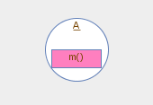
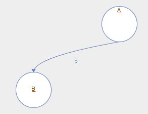
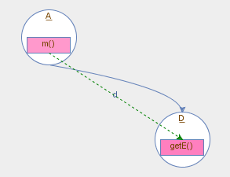
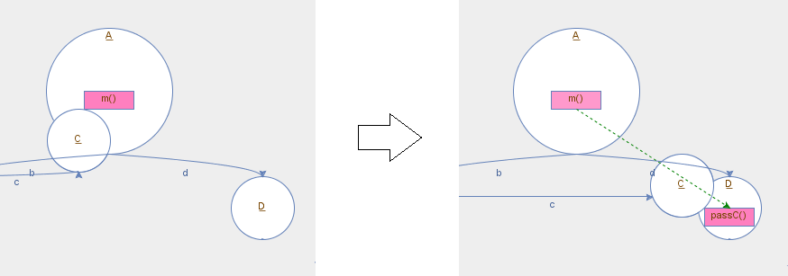
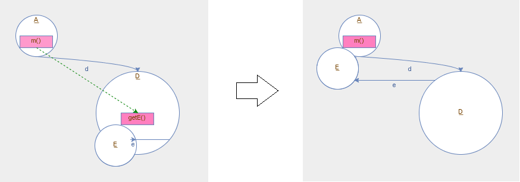

マグネトロンは，オブジェクト指向プログラム実行時のオブジェクトの生成や受け渡し，メソッド呼び出しなどの内部動作を，アニメーションを用いて統合的に可視化する手法です．
マグネトロンによる可視化はオブジェクト呼び出し図と多くの部分で共通しています．
まず，各オブジェクトは円で表され，円の内部にそのクラス名が記されます．
また，メソッドの各実行は円の内部の矩形で示され，矩形の内部にメソッド名が記されます．
例えば以下の図は，A クラスのあるインスタンスのメソッド m() が実行されている様子を表しています．

円の間を結ぶ実線矢印はフィールドによるオブジェクトの参照(すなわち参照元のオブジェクトが参照先のオブジェクトをそのフィールドで参照していること)，破線矢印はオブジェクトの生成を示します．
例えば以下の図は，A クラスのインスタンスが B クラスのインスタンスをフィールド b で参照している様子を表しています．
なお，円の間の赤い実線矢印は，このプログラムの実行途中に参照元のオブジェクトが参照先のオブジェクトをフィールドで参照するようになったこと(参照の生成)を示します．

メソッド呼び出しは，矩形の間を結ぶ緑色の破線矢印で表されます．
あるクラスのクラスメソッド(staticメソッド)が呼び出された場合は，そのメソッド実行はクラス自体を表す矩形の内部に表示されます．
メソッドの呼び出しが深くなった場合は，呼び出しスタック中の呼び出し先側のメソッド実行をより濃いピンクに，呼び出し元側のメソッド実行をより薄いピンクになるように配色しています．
例えば以下の図は，A クラスの m() メソッドが D クラスの getE() メソッドを呼び出している様子を表しています．

メソッド内で仮引数やローカル変数によって参照されているオブジェクトは，メソッド実行を表す矩形に接する形で配置されます．
この特徴によって，引数や戻り値によるオブジェクトの受け渡しを，受け渡される方向にオブジェクトが移動するアニメーションによって表すことができるようになります．
例えば以下の図は，A クラスの m() メソッドが D クラスの passC() メソッドを呼び出す際に， C クラスのインスタンスへの参照を引数として渡す様子を表しています．

また，以下の図は，D クラスの getE() メソッドから A クラスの m() メソッドに復帰する際に，E クラスのインスタンスへの参照を戻り値として返す様子を表しています．

今回の実験では，マグネトロンはリモートデスクトップ上にインストールしてあるマグネトロンビューアによって閲覧していただきます．
マグネトロンビューアの操作方法についてはこちらをご参照ください．